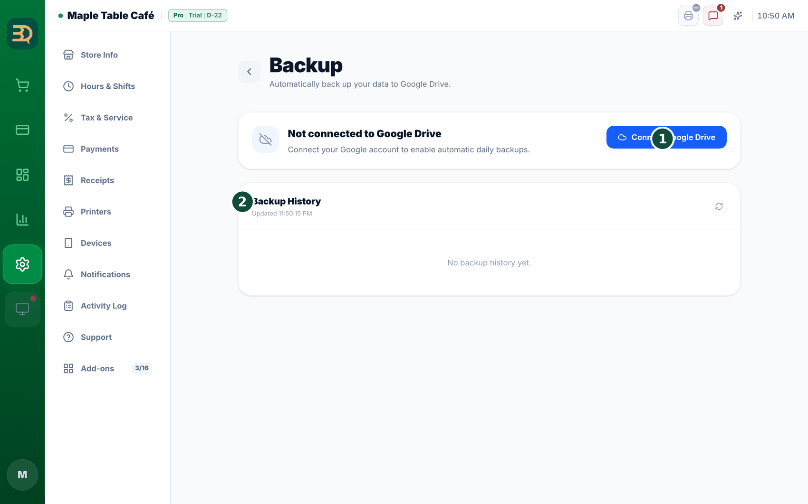

19백업
백업은 가게의 모든 정보를 따로 복사해 둔 것입니다. BrewDesk가 본인 Google Drive에 사본을 하나 저장할 수 있어 데이터를 항상 안전하게 보관할 수 있습니다.
- Settings로 이동하여 백업 페이지를 찾습니다.
- Connect Google Drive를 탭하고 Google 계정에 로그인합니다.
- 설정은 이것으로 끝입니다. 이후에는 BrewDesk가 자동으로 새 백업을 계속 저장합니다.
- 이전 복사본이 필요하면 Restore를 탭하고 백업을 선택해 주세요.
Google Drive는 파일을 보관하는 무료 온라인 공간입니다. 백업은 본인 Drive에 저장되므로 사장님만 확인할 수 있습니다.
